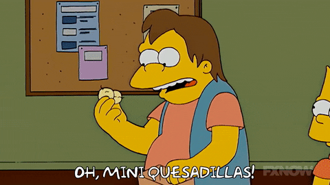

Homepage
Quesadillas

Description
Quesadillas are the right kidney of the mexican people. You could probably do without one but having it is just nicer.
For Americans its just a weird looking grilled cheese sandwich.
Ingredients
- Cheese of your choice I think
- Torilla of your choice
Steps
- Heat the torilla up a little bit
- Add cheese to the center of it
- Wait until the cheese melts and enjoy